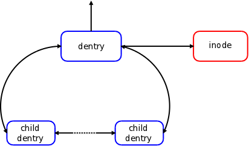

Dcache scalability and RCU-walk
has had nowhere near enough review". The code is complicated and tricky, which, certainly makes review harder. Your editor, never afraid to make a total fool of himself, will now attempt to describe how this patch set works just in case it helps.
A dentry's core job is to represent a directory in the filesystem and to cache the mapping between a name found within that directory and its associated inode. To that end, dentries are organized into a hierarchy which mirrors the on-disk hierarchy found in the filesystem. Each dentry looks vaguely like this:

Every dentry keeps a list of children (names contained within the directory) which can be looked up by name; each dentry also points to the inode it represents, its parent dentry, and a number of other things. Note that the real situation is a bit more complicated than shown here; children are kept in hashed lists for faster lookup, an inode with more than one link may have more than one dentry pointing to it, and so on. But, in a conceptual sense, the above diagram shows what is going on.
When the VFS layer needs to turn a path provided by a program into a pointer to the associated inode, it will perform this lookup through the dentry cache. The first step is to get to the starting point - which could be the root of the filesystem (for absolute paths), the current working directory (for relative paths), or a program-specified directory. In the first two cases, the associated dentries can be found by way of the process's task structure. The first component of the path is looked up in the starting dentry, yielding a pointer to the next dentry in the path; that process is repeated until the end of the path is reached.
It may be that some of the dentries in the path are not present in the cache; there is not enough room in memory to cache the entire filesystem hierarchy. When that happens, the lookup code must ask the filesystem (by way of the parent's inode operations) to perform the lookup; a dentry structure can then be created with the result and inserted into the cache. Of course, a lookup will fail if the file (or a component in the path) does not exist; in that case, the VFS may insert a "negative dentry" into the cache to speed up future failed lookups. That optimization is important - just run a simple command under strace to see how common failed lookups really are.
The dentry cache is a dynamic data structure; dentries will come and go frequently in response to filesystem changes and the simple need to clean out old dentries on occasion. Clearly, some sort of protocol is needed to prevent changes from colliding with each other; if one processor removes a dentry while another is using it to look up a name, good things will almost certainly not result. Once upon a time, the global dcache_lock was used to protect the cache during lookup operations. The global lock scaled poorly, so it has not been used for lookups for some time - though it still does protect many other things.
Current kernels use read-copy-update to manage the removal of dentries from the cache, so a lookup operation need not worry about a specific dentry going away as long as that operation does not block. If a lookup has to call into the filesystem code, though, things might indeed block; to ensure that a dentry will stay around in this situation, a reference count is kept. So, as a lookup works its way down the hierarchy, it will increment the reference count of every dentry it passes through. Most of those references are eventually dropped, though the reference on the final dentry must be kept as long as the file is held open.
[PULL QUOTE: Making path lookup truly scalable in a highly parallel situation requires making no changes to the dentry structures themselves. END QUOTE] The core of Nick's patch set is a new lookup algorithm called "RCU-walk." The key to RCU-walk is the idea that, on workloads where pathname lookup is likely to present scalability problems, the chances are good that most dentries will already be present in the cache. One might think that the current algorithm would perform well in such situations, but there is a catch: the constant incrementing and decrementing of dentry reference counts creates a great deal of cacheline bouncing - enough to slow things considerably. Making path lookup truly scalable in a highly parallel situation requires making no changes to the dentry structures themselves - turning the cache into a read-only data structure during the lookup process, essentially.
So, when the new code needs to perform a path lookup, it starts with an rcu_read_lock() call. The dentry cache should then remain stable enough for the lookup to get to the end of the path and increment the reference count for the final dentry (only). So lookups can be done without locks - and, crucially, without changing any information in the dentries passed through on the way. That makes the lookup scalability problems go away.
Of course, there are a few catches. The most obvious of these is the situation where one of the dentries in the path is not resident in the cache. At that point, the RCU-walk process must stop; the code will attempt to obtain a reference on the final dentry it found, then return to the older, reference-count-based method ("ref-walk") for the rest of the lookup. Sometimes, getting that mid-point reference will not be possible; that situation will force the lookup to restart from the beginning using ref-walk for the entire path.
More challenging, perhaps, is what happens if one of the dentries changes while the lookup is passing through. By normal RCU standards, that should never happen; changing a structure requires making a copy and making the changes there. The dentry cache bends those rules, though; RCU is mostly used to protect against dentry deletion there. So, in particular, a rename can cause a dentry to change attributes - and hashed lookup lists - while another process is using it for a lookup.
Naturally, using a lock to protect against this possibility would wipe out any scalability gains that would otherwise come from all of this work. So the RCU-walk code uses a seqlock instead. Seqlocks do not prevent concurrent changes, but they do allow code to detect when such a change has occurred. Nick has added a seqlock to every dentry which must be incremented whenever the associated name, parent, or inode changes. If the sequence number changes while a lookup is using a dentry, the lookup will be restarted (with the seqlock write-locked, to prevent heavy renaming from starving other operations indefinitely). For more information on the rename problem and how it's handled, see path-lookup.txt, which is included in the patch set.
The use of RCU has one other implication which forces a significant change. Directory permissions must be checked as part of every step in a lookup operation to ensure that users don't access parts of the filesystem which should not be available to them. Permission checking is done by the filesystem, by way of the permission() inode operation. If this checking is to happen safely during the RCU-walk process, the inode structure must not go away while the lookup is in progress. So, in other words, inodes must now be freed with RCU rather than being released directly. The change is relatively straightforward, but it requires tweaking every filesystem implementation in the tree, so the patch is large.
A number of other filesystem callbacks (d_compare() and d_hash(), for example) have also had to be changed to support RCU-walk. Anybody maintaining an out-of-tree filesystem will have some work to do if and when this patch set is merged.
While RCU-walk is perhaps the most significant change in this patch series, it's far from the only one. Many of the other patches are aimed at the elimination of the global dcache_lock altogether. There is a new dcache_hash_lock to protect hashing operations, dcache_lru_lock for modifications to the dentry LRU list, and dcache_inode_lock to protect inode dentry lists. The scope of the dentry d_lock spinlock has been expanded to cover changes to much of the structure; the reference count (formerly an atomic_t) is also covered by the lock now. All told, it's a large set of patches making fundamental changes to some of the core VFS code.
Interestingly, Nick also changed the dentry d_validate() callback,
which, he says, "has been broken for a long time
". That
function depended on a truly scary routine called
kmem_ptr_validate(), described this way:
It is hard to imagine that such a function could be put to any sort of safe use. The only user in current kernels is d_validate(); Nick's patch fixes that usage and gets rid of the function. It seems unlikely to be missed.
Given the complexity of this patch set, it is not surprising that reviews
have been relatively scarce. Review time for VFS-related patches has
always been hard to come by, and these are trickier than most. The ongoing
name-calling match between Nick and Dave Chinner, who has also been working
in this area, has not helped; neither has the fact that Al Viro appears to
have gone into one of his quiet periods. Given that Linus seems fairly
well determined to merge this work, it would be good if at least some of
the inevitable glitches could be found before the 2.6.38 merge window.
Hopefully enough developers will find the time to review and/or test these
patches to make some progress in that direction.
| Index entries for this article | |
|---|---|
| Kernel | Dentry cache |
| Kernel | Filesystems/Virtual filesystem layer |
| Kernel | Scalability |
Posted Dec 16, 2010 4:15 UTC (Thu)
by felixfix (subscriber, #242)
[Link] (1 responses)
Your editor, never afraid to make a total fool of himself,
I would amend this to *try to make a fool* because not only have I never seen our editor make any kind of fool of himself, I do not think he is capable of being a total fool, except, well, when it comes to wanting to contribute so much by way of LWN.
Posted Dec 19, 2010 22:05 UTC (Sun)
by jospoortvliet (guest, #33164)
[Link]
Posted Dec 16, 2010 7:23 UTC (Thu)
by jzbiciak (guest, #5246)
[Link] (3 responses)
Posted Dec 16, 2010 14:50 UTC (Thu)
by Nick (guest, #15060)
[Link]
Fortunately there is a safety net at the bottom, and a less crumbly but slower staircase available.
But actually operations that require a sequence count change are not so common, and path walks require sequence protection only briefly, so sequence count failure is quite rare. It's more common that the dentry is missing or some filesystem operation requires blocking, which can be handled more gracefully.
Posted Dec 16, 2010 15:15 UTC (Thu)
by dlang (guest, #313)
[Link] (1 responses)
Posted Dec 16, 2010 15:33 UTC (Thu)
by jzbiciak (guest, #5246)
[Link]
I was afraid that would happen. Here, I re-hosted it. (Image is from Getty Images, FWIW, in case the watermark wasn't enough to clue you in.)
Posted Dec 16, 2010 15:54 UTC (Thu)
by jhhaller (guest, #56103)
[Link] (1 responses)
While I have no idea of the relative time savings this would provide, has there ever been a proposal to have such an alternate open call, or done any prototyping?
Posted Dec 16, 2010 16:18 UTC (Thu)
by corbet (editor, #1)
[Link]
Dcache scalability and RCU-walk
Dcache scalability and RCU-walk
For some reason, I envision the RCU walk on a dynamically changing filesystem as occasionally being a little like this.
Dcache scalability and RCU-walk
Dcache scalability and RCU-walk
Dcache scalability and RCU-walk
Dcache scalability and RCU-walk
Why searches must start at the root or current directory
Try "man openat" then ask your question again :)
Why searches must start at the root or current directory